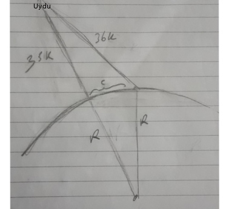

MH370 Uçağı Nerede?
2014 yılında meydana gelen bu uçak kayıp hikayesini haberlerden çoğumuz hatırlarız, Malezya'dan kalkış yapan uçak rotasını değiştirerek kayıplara karıştı. Neler olduğu, uçağın nereye gittiği, nereye düştüğü hakkında pek çok spekülason yapıldı.
Uçağı bulmak isteyen araştırmacılar farklı yöntemler kullandı, veri olarak faydalı olabilecek bazı ipuçlar elde vardı, mesela uçak bir noktada askeri bir radarla tespit edilmişti, ardından bazı noktalarda Immarsat uyduları ile iletişime geçtiği için o noktalarda "BTO verisi" kayıtlarda idi, bunun üzerinden uyduya olan mesafe hesaplanabiliyordu. Bazıları amatör radyo kullanıcılarının düzenli olarak birbirlerine gönderdikleri düşük frekanslı WSPR denen sinyallerdeki kesintilere dayanarak bunu bir tür radar olarak kullanma fikrine erişti, böylece uçağın rotasını saptamaya uğraştı (Godfrey).
Biz burada örnek olarak Immersat BTO verisini kullanacağız. Veri belli noktalarda yeri bilinen bir uydu ve uçak arasındaki açı bilgisini vermektedir. [1,2] bağlantılarından aldığımız ham veri alttadır,
import pandas as pd
pd.set_option('display.max_columns', None)
df = pd.read_csv('flighta.csv')
df[['Date','Lat','Lon','PingArc']].head(3)
Out[1]:
Date Lat Lon PingArc
0 2014-03-07 18:25:27.421 1.562623 64.527615 31.42
1 2014-03-07 19:41:02.906 1.639914 64.514401 29.01
2 2014-03-07 20:41:04.904 1.574644 64.503959 29.67
Bize bir uydu/uçak mesafesi BTOr lazım, isimlemeyi BTO çemberlerinin
yarıçapı kavramını çağrıştırması için seçtik. Hesap nasıl yapılır?
Bize gereken dünya çevresinin / dış çemberinin bir kısmı, bu kısmın,
parçanın ne olduğunu bir açı hesabı ile bulabiliriz, resimdeki
$\alpha$ acısı bu. Bu hesap [2]'de yapılmış, gereken açılar PingArc
içinde. Bu açıyı radyan olarak dünya yarıçapı R ile çarpınca gerekli
uzaklık elde edilir.

Ayrıca uçağın her ölçüm arasında katettiği mesafe de lazım, bunun için ölçüm noktaları arasında geçen zamanları hesaplarız, sonra ortalama 880 km/h baz alarak her aralıkta katedilen mesafe hesaplanabilir. Hepsini bir arada hesaplayalım,
R = 6378
vort = 880
df['Date'] = pd.to_datetime(df.Date)
df['Date2'] = df.Date.shift(-1)
df['Elapsed'] = df.apply(lambda x: ((x['Date2'] - x['Date']).total_seconds())/3600,axis=1)
df['BTOr'] = df.apply(lambda x: R*np.deg2rad(x['PingArc']), axis=1)
df[['Date','Elapsed','Lat','Lon','PingArc','BTOr']].head(3)
Out[1]:
Date Elapsed Lat Lon PingArc BTOr
0 2014-03-07 18:25:27.421 1.259857 1.562623 64.527615 31.42 3497.583272
1 2014-03-07 19:41:02.906 1.000555 1.639914 64.514401 29.01 3229.309062
2 2014-03-07 20:41:04.904 1.006111 1.574644 64.503959 29.67 3302.778348
Uçağın uyduya olan dünya yüzeyindeki mesafeyi bilmek tabii işin başlangıcı, mesafe verisini kullanıp uydu merkezli bir çember çizebiliriz ama uçak bu çemberin üzerinde herhangi bir yerde olabilir. O zaman hesapsal kestirme (estimation) teknikleri kullanmak gerekli, uçağın ortalama hızını biliyoruz, uydu ile saptandığı noktalardaki tarihleri biliyoruz, o zaman iki ölçüm arası bir mesafe hesaplayabiliriz, tek bilmediğimiz uçuşun yönü (bearing) bilgisi, iki boyutlu olarak düşünürsek bize yönsel açı bilgisi lazım.
Bu değeri bulmak için farklı yollar kullanılabilir. Daha önce [4] yazısında gördüğümüz filtreleme tekniği bunlardan biri. Filtremeyi hatırlarsak bir "tersine çevirme" problemini çözüyordu, robot yerini saptama problemlerinde çok ise yarıyordu. Elde bilinen gürültülü bir hareket mekanığı vardı, ve gelinen yeri algılayan bilinen ve yine gürültülü bir algılama (sensor) yöntemi vardı. Ardı ardına hareket/ölçüm, hareket/ölçüm şeklinde elde edilen verileri kullanarak problemi tersine çevirip bunu yer bulmak için kullanabiliyorduk.
Burada aslında olan benzer bir durum. Uçak bir parametresi eksik ama bilinen şekilde hareket ediyor, ölçüm alınıyor, gürültülü bir şekilde bir çember üzerinden. Algılama bağlamında aslında bu robot dünyasındaki ultrasonik algılayıcı gibi, bu algılayıcılar da uzaklık verir ama yön vermez, aynen İmmersat ile olduğu gibi bilinen algılayıcı etrafında rapor edilen uzaklık üzerinden bir çember hayal ederiz, yer bu çember üzerinde herhangi bir noktada olabilir. Parcaçık filtresi hesabı için son gelinen noktadan algılayıcıya doğru bir Öklitsel mesafe hesaplarız, üzerine bir Gaussian gürültü ekleriz, ve bu olasılık fonksiyonu üzerinden raporlanan mesafe ile bir olasılık hesabı yaparız, sonraki döngü için eldeki parçacıklara bu şekilde bir olasılık ataması yaparız.
Bir diğer yaklaşım problemi optimizasyon ile çözmek. Bilinen ortalama hız, gidilen mesafe, çemberlerin yerleri ve büyüklükleri, bilinmeyen yön verisi. O zaman optimize edilecek olan yön listesi olur, ve her ulaşılan noktada bir çembere ne kadar yaklaştığımız bir bedel (cost) fonksiyonu olarak optimizasyon rutinine veririz. Altta böyle bir optimizasyon görüyoruz.
from pygeodesy.sphericalNvector import LatLon
import pandas as pd, numpy as np
from scipy.optimize import minimize
pd.set_option('display.max_columns', None)
#Last Military Radar Contact
#18:22:12 6.65,96.34
d1 = (pd.to_datetime("2014-03-07 18:25:27.421") - \
pd.to_datetime("2014-03-07 18:22:12.000")).total_seconds()/3600
def cost(pars):
b1,bearings = pars[0],pars[1:]
lat,lon = 6.65,96.34
p1 = LatLon(lat,lon)
curr = p1.destination (d1 * vort, bearing=b1, radius=R)
deltas = []
for i,row in df.iterrows():
p1 = LatLon(row['Lat'],row['Lon'])
deltacurr = p1.distanceTo(curr) / 1000
deltas.append(np.abs(deltacurr-row['BTOr']))
if i==len(df)-1: break
travel = row['Elapsed']*vort
curr = curr.destination (travel, bearing=bearings[i], radius=R)
return np.sum(deltas)
bearings = np.ones(len(df))*180
opts = {'maxiter': 100, 'verbose': 3}
res = minimize (fun=cost,x0=([220] + list(bearings)),
method='Nelder-Mead',
options=opts)
print (res['x'],res['fun'])
[221.95991878 196.99509941 191.32246273 189.91456058 188.3729626
193.30184947 146.31890122 182.46286984] 100.20394733332114
Üstteki liste her ölçüm noktası arasındaki yön listesidir. Bu yön listesini İmmersat çemberleri ile bir haritada gösterirsek,
from pygeodesy.sphericalNvector import LatLon
import folium
def plot_map(bearings_list,outfile):
R = 6378
d1 = (pd.to_datetime("2014-03-07 18:25:27.421") - \
pd.to_datetime("2014-03-07 18:22:12.000")).total_seconds()/3600
b1,bearings = bearings_list[0],bearings_list[1:]
m = folium.Map(location=[-25, 96], zoom_start=3)
lat,lon = 6.65,96.34
folium.CircleMarker([lat,lon],
color='red',
fill=True,fillColor='red',
popup=folium.Popup("Last Military Radar Contact 18:22:12 ", show=True),
radius=4.0).add_to(m)
p1 = LatLon(lat,lon)
curr = p1.destination (d1 * vort, bearing=b1, radius=R)
for i,row in df.iterrows():
folium.Circle(
location=[row['Lat'],row['Lon']],
radius=row['BTOr']*1000,
color="red",
weight=1,
fill_opacity=0.6,
opacity=1,
popup="Arc {}".format(i+1)
).add_to(m)
ds = pd.to_datetime(row['Date'])
ds = ds.strftime('%m/%d %H:%M')
folium.CircleMarker([curr.lat,curr.lon],
color='red',
fill=True,fillColor='red',
popup=folium.Popup("Arc" + str(i+1) + " " + ds, show=False),
radius=4.0).add_to(m)
if i==len(df)-1: break
p1 = LatLon(row['Lat'],row['Lon'])
deltacurr = p1.distanceTo(curr) / 1000
travel = row['Elapsed']*vort
curr = curr.destination (travel, bearing=bearings[i], radius=R)
m.save(outfile)
print (curr.lat,curr.lon)
plot_map(res['x'], "mh370_route.html")
-38.96789035839803 86.21895014132647
Arama
MH370 kalıntısının arama çalışmaları tekrar başladı, daha önceden aranan (ve uçağın bulunmadığı) bölgelere bakıldığında üstteki tahminin bu bölgelerin birinde olduğunu görebiliriz. Bu yöntemi doğrulaması açısından fena değil aslında, diğer bilimcilerin de ilk yaptığı tahminler, hesaplar demek ki bu yöndeydi. Eğer BTO çemberlerine dayanarak hesaplar yapılırsa bizimkine benzer hesapların olması normaldir.
Problem, alternatif çözümler sunan bazı bilimcilere göre, "yedinci çember" konusunda olmalı... Bu ölçüm ya sinyali güvenilmez, ya da ondan sonra ne olduğu bağlamında tam güvenilir bulunmuyor artık. Şu anda yapılan aramalar biraz daha doğu, güneydoğu bölgesine odaklanmış durumda, Godfrey, Lyne noktaları bu yönlerde. Lyne'a göre yedinci sinyal sonrası uçağın yakıtı hala vardı ve dik bir düşüş değil pilot bilerek belli bir noktaya doğru kontrollu şekilde uçağı indirdi. Bakalım yeni aramalar ne bulacak.
Kaynaklar
[1] Wragg, Github
[2] Zweck, Analysis of Methods Used to Reconstruct the Flight Path of Malaysia Airlines Flight 370
[3] The Independent
[4] Bayramlı, Parçacık Filtreleri
Yukarı